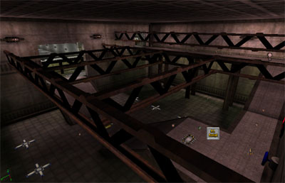
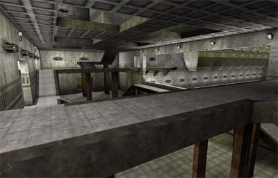

- June 16, 2003 - As you can see on the right, I've updated one of the pics to show visually what I'm doing to the map. Basically, I cut roughly half the lights from the map (probably a bit more actually), and changed the remaining lights in each base to be team-colored. I then filled up a lot of the empty visual space in each base with girders and trim around all the edges, which makes each room feel much more full and complete to me. I'm very happy so far with how the map looks, except for the center area, which I think still looks a little bland (but not nearly as bland as before I took all those lights out). Anyways, I'm finishing up the touches and should be ready to release a second beta version soon.
- June 15, 2003 - Another update today, I posted up a "beta" version of the map to the core dev forums, and got back some good feedback from SpoonDog about things I should try to spruce up the map's looks a bit. I finally got around to downloading the DDS plugin for Photoshop from NVidia, and that was a very good thing to do. Combined with my newfound realization that you can skin static meshes, I edited the texture on my lightboxes to have red and blue tints, so now I can make realistic team lighting (which is one of the things Spoon suggested). Also I need to find something for the doors, Tahngarth has suggested some sort of wall panel, so maybe I'll take another browse through the standard meshes for something nice tomorrow. I also went on a light-bashing spree, which has made the map a lot darker and a lot cooler looking. I'm feeling pretty good about how the map is shaping up, but I've now got a lot more work to do. Luckily, I've got nothing else planned for tomorrow
 . .
- June 15, 2003 - I've added an arena into the map now, but more importantly I've botpathed the entire thing. Right now my major concerns are that the bots seem to get stuck on my jump pads (I knew it couldn't be that easy
 ), some other minor pathing issues, and that the map is very slow FPS-wise with bots in it. I'm considering taking out the nice beautiful window in each base and replacing it with a large anti-portal, but it adds so much asthetic/tactical value to the map that I'm hoping I don't have to do that. ), some other minor pathing issues, and that the map is very slow FPS-wise with bots in it. I'm considering taking out the nice beautiful window in each base and replacing it with a large anti-portal, but it adds so much asthetic/tactical value to the map that I'm hoping I don't have to do that.
- June 14, 2003 - Well, I've got some pics up that, although they're a little low-quality, should give some idea of the basic look of the map. I'm going to be putting in an arena soon (it will be above the switch room, much as the jail is above the foyer). I've also done my first jump pads in UT2003, and I can't say enough about how incredibly awesome this is. It takes no work at all, you just tell it what path node to target and voila, I was jumping up and down in excitement (not literally) for 10 minutes when I first used them. From my initial impressions of the in-game scale, I think this map should be able to handle 10-16 players, it's quite large, a little larger than I thought I was making it before I got in-game.
|
 New switch room, compare it with the old one directly below. It's amazing what a little less light and some girders and trim will do.
![[Bir-NameTBA-Shot2]](images/bir-nametba-shot2.jpeg) Switch room, looking outward towards the "foyer" of the base, the switch is the blue wheel on the right of the picture.
 The foyer of red base, looking across the room, the walkways curving up into the ceiling are the exits of the jail, which is through the "holes" in the roof (which will have glass eventually). Also, the large opening to the main "hallway" is a window and will be filled with glass.
|